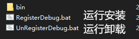
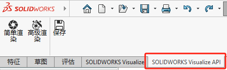
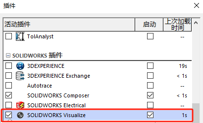
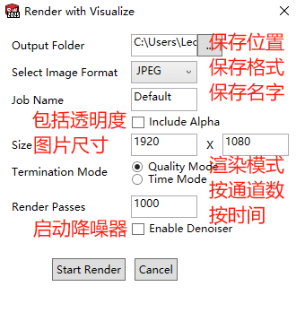
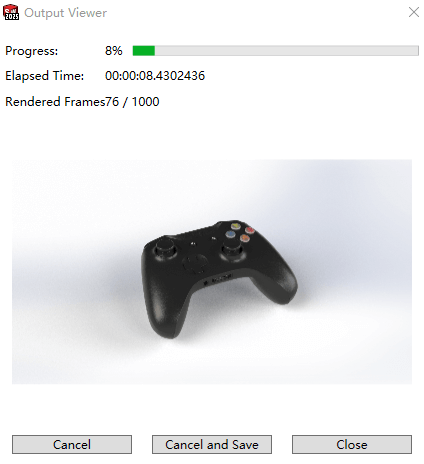
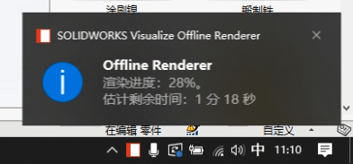
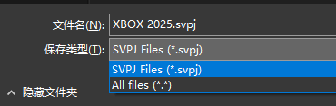

VisualizeAPI插件
使用 SOLIDWORKS Visualize API，您可以创建 SOLIDWORKS 模型的逼真渲染功能。
您可以通过 SOLIDWORKS Visualize 插件使用此 API，这让您可以直接渲染 SOLIDWORKS 文档或将其转换为 Visualize 项目文件。
IRendererPropertiesStatus 界面 - 2025 - SOLIDWORKS API 帮助
安装
下载插件：通过网盘分享的文件：VisualizeAPI插件.zip
百度云链接: https://pan.baidu.com/s/1M5DETBswzDGa3YfBpwV_PQ?pwd=gev2 提取码: gev2
托管服务器下载： VisualizeAPI插件.zip
在下载后的安装包内，运行“RegisterDebug.bat”，安装插件。

安装后在SOLIDWORKS插件界面，可以看到有该插件的3个功能。

在使用前你还需注意：需要打开SOLIDWORKS Visualize插件。不然点了渲染按钮是没有结果输出的。

使用
以Xbox游戏手柄的模型为例，进行功能测试。模型我已用SOLIDWORKS自带的材质进行外观添加了。
这是打开Realview效果
简单渲染
会按默认设置输出“简单渲染.png”的图片
简单渲染会占用SOLIDWORKS程序的运行、此时你是不能操作SOLIDWORKS软件。这是一个比较麻烦的点，不过使用【高级渲染】的后台渲染可以解决。
高级渲染
使用高级渲染，会进入渲染设置界面：大致包括保存的位置和名字、输出的质量和方式等

开始渲染时，会进入进度条界面、渲染过程效果、渲染时间

Cancel：取消渲染
Cancel and Save：取消渲染并将当前渲染保存（未完成的渲染可能会模糊）
Close：可以后台渲染，此时SOLIDWORKS正常使用
注意：在【简单渲染】模式下，SOLIDWORKS软件会挂起卡住，不过【高级渲染】模式下，我们可以在渲染过程界面出来后，选择“Close”转到后台渲染。

保存
目前支持的保存格式如图。支持导出成SWV项目文件。也就是SWV能打开的原生文件。

附件
代码下载
IVisualizeAddinManager Interface - 2025 - SOLIDWORKS API Help
内容解读
1
2
3
4
5
6
7
8
9
10
11
12
13
14
15
16
17
18
19
20
21
22
23
24
25
26
27
28
29
30
31
32
33
34
35
36
37
38
| using System;
using System.Windows.Forms;
using SolidWorks.Interop.sldworks;
using SolidWorks.Interop.swconst;
using SolidWorks.Visualize.Interfaces;
namespace Sw_toolkit
{
class SW_Visualize
{
static ISldWorks swApp=(SldWorks) System.Runtime.InteropServices.Marshal.GetActiveObject("SldWorks.Application.33");
static string VisualizeAddinProgID = "SolidWorks.Visualize.Implementation.VisualizeAddin";
public static void Render()
{
IVisualizeAddin vizAddin = swApp.GetAddInObject(VisualizeAddinProgID);
IVisualizeAddin testViz = swApp.GetAddInObject(VisualizeAddinProgID);
IVisualizeAddinManager visualizeAddinMgr = testViz.GetAddinManager();
IRenderOptions vizRenderOptions = visualizeAddinMgr.RenderOptions;
vizRenderOptions.ImageFormat = ImageFormat_e.JPEG;
vizRenderOptions.FrameCount = 1000;
vizRenderOptions.Width = 800;
vizRenderOptions.Height = 800;
vizRenderOptions.JobName = "Toaster";
vizRenderOptions.OutputFolder = @"E:\SOLIDWORKS Visualize Content\Images";
vizRenderOptions.DenoiserEnabled = false;
visualizeAddinMgr.Render();
}
}
|